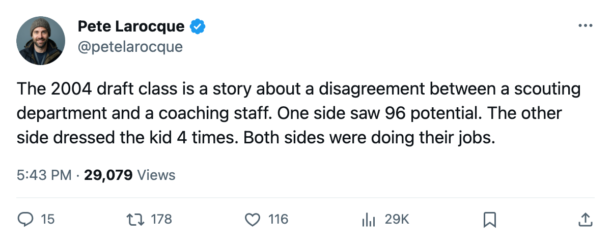
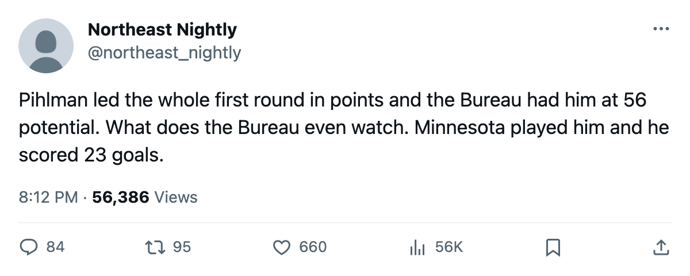

The 9th Pick Led the 2004 First Round in Points. The Bureau Gave Him 56 Potential.
The season is over. The class the Bureau loved from the top down played the least. The class it rated lowest played the most.
 Pete LarocqueScouting editor · The Prospect File
Pete LarocqueScouting editor · The Prospect File
Tuomo Pihlman73 scored 34 points in 73 games for  Minnesota Wild. He led the 2004 first round. The League Scouting Bureau gave him 56 potential, the second-lowest among every first-rounder on record.
Minnesota Wild. He led the 2004 first round. The League Scouting Bureau gave him 56 potential, the second-lowest among every first-rounder on record.
The class finished on April 5. The numbers are in, and they read backwards.
Andreas Stahle71 sits at 96 potential, the highest in the class, with just 4 games for  Toronto Maple Leafs. Roger Nylander73 has 94 potential and 18 games for
Toronto Maple Leafs. Roger Nylander73 has 94 potential and 18 games for  San Jose Sharks. At 92 potential, Mika Sulku72 logged 40 games for
San Jose Sharks. At 92 potential, Mika Sulku72 logged 40 games for  Calgary Flames. The 1st overall, Vaclav Spacek77, has 91 potential and 50 games at 7.6 minutes a night.
Calgary Flames. The 1st overall, Vaclav Spacek77, has 91 potential and 50 games at 7.6 minutes a night.
Tuomas Lydman74 has 52 potential, the lowest. He played 76 games for  Mighty Ducks of Anaheim at 18.1 minutes a night and scored 32 points. Only Pihlman produced more.
Mighty Ducks of Anaheim at 18.1 minutes a night and scored 32 points. Only Pihlman produced more.
I wrote on March 25 that the Bureau's elite 2004 first-rounders were watching from the bench. That was a snapshot. This is the full season, and the pattern held for 82 games.
The Bureau's top four and their ice time
| Pick | Player | Club | Potential | GP | Points | MPG |
|---|---|---|---|---|---|---|
| 19 | Andreas Stahle | TOR | 96 | 4 | 0 | 17.8 |
| 12 | Roger Nylander | SJ | 94 | 18 | 7 | 11.3 |
| 4 | Mika Sulku | CGY | 92 | 40 | 5 | 7.7 |
| 1 | Vaclav Spacek | TOR | 91 | 50 | 17 | 7.6 |
Spacek at least got 50 games. Stahle got 4. At Toronto Maple Leafs, the depth chart in front of a 20-year-old defenseman runs through  Rostislav Klesla84 and
Rostislav Klesla84 and  Barret Jackman86, both established, both older. Stahle's 17.8 minutes in 4 games tell you the coaches liked what they saw in scraps. They also tell you the window opened 4 times all season.
Barret Jackman86, both established, both older. Stahle's 17.8 minutes in 4 games tell you the coaches liked what they saw in scraps. They also tell you the window opened 4 times all season.
Sulku at Calgary Flames played 40 games at 7.7 minutes and finished with 5 points. His 92 potential says the Bureau thinks he has something. Calgary asked him for nothing more than a depth role all year.
The men the Bureau underrated
| Pick | Player | Club | Potential | GP | Points | MPG |
|---|---|---|---|---|---|---|
| 9 | Tuomo Pihlman | MIN | 56 | 73 | 34 | 12.7 |
| 10 | Tuomas Lydman | ANA | 52 | 76 | 32 | 18.1 |
| 16 | Ola Asplund67 | BOS | 76 | 72 | 11 | 9.8 |
| 28 | Craig Abid67 | NYR | 73 | 69 | 12 | 9.0 |
Pihlman and Lydman were the 9th and 10th picks, graded 56 and 52 potential, the two lowest in the first round. They played 73 and 76 games and scored 34 and 32 points. Minnesota and Anaheim used them like NHL forwards. Everyone else used their higher-rated picks like prospects they weren't ready to trust.
Asplund is a useful contrast: 76 potential at  Boston Bruins, 72 games, 11 points, 9.8 minutes. He played plenty. The points weren't there at the same rate.
Boston Bruins, 72 games, 11 points, 9.8 minutes. He played plenty. The points weren't there at the same rate.
What 70 games and 3 points means
Vladimir Kloucek70 played 70 games for  St. Louis Blues at 13.4 minutes a night. He scored 3 points. His potential is 67, his overall is 70, and he is 19 years old. St. Louis gave him the 8th pick last June and dressed him 70 times. He did not produce.
St. Louis Blues at 13.4 minutes a night. He scored 3 points. His potential is 67, his overall is 70, and he is 19 years old. St. Louis gave him the 8th pick last June and dressed him 70 times. He did not produce.
Kloucek is the case that complicates the clean inversion above. The Bureau rated him mid-class. St. Louis played him. The production was 2 goals and 1 assist. If you want a reason why coaches hesitate to trust a 19-year-old center, this is it. The scouts were right, and St. Louis learned something expensive.
What this says about June
The 2004 class will be graded on the gap between what the Bureau projected and what the clubs did with the picks. The Bureau put Stahle, Nylander, Sulku, and Spacek at 96, 94, 92, and 91. Those four men logged 4, 18, 40, and 50 games between them. The clubs held them back, or they weren't ready, or the coaches didn't trust the project yet.
Meanwhile the two players the Bureau put closest to replacement-level at 56 and 52 potential carried the class in minutes and points. Pihlman finished with 23 goals. Lydman finished with 16 goals and the most ice time of any first-rounder in the class.
The 2004 class showed, over 82 games, that what the Bureau projects and what a coach does with the lineup card can disagree completely. The coach is the one the box score credits.

